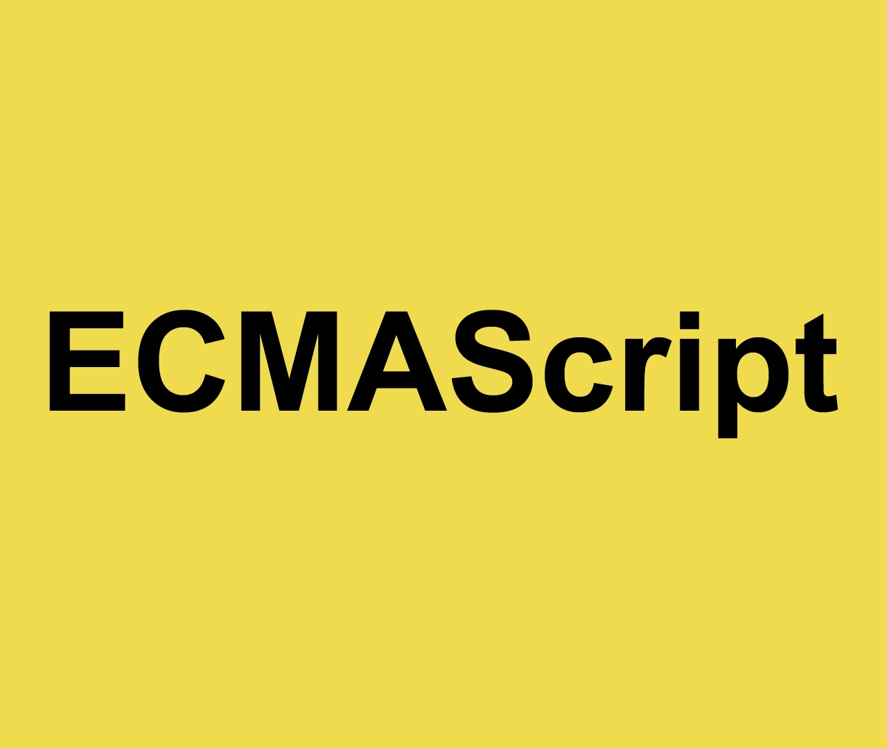

¿Qué es ECMAScript?
Determina como emplear JavaScript y es el núcleo de este lenguaje de programación, reconocido para el desarrollo web, asi como otros lenguajes. Las siglas de este lenguaje significan Computer Manufactures Association Scripts.
ECMAScript fue creado por Brendan Eich, mismo creador de JS; se utilizo por primera vez en el Navigator 2.0 browser. Ahora mismo se utiliza en muchos navegadores de World Wide Web, que ayuda al scripting del lado del cliente.
Características
ECMA Script 6 o es6 cuenta con diferentes características que lo hacen muy viable para integrarlo en tus programas de código. A continuación, te vamos a listar algunos de ellos:
- Constantes.
- Funciones y variables.
- Parámetros extendidos.
- Literales de plantilla.
- Literales extendidos.
- Expresiones regulares.
- Propiedades de objetos mejoradas.
- Módulos.
- Clases.
- Símbolos.
- Iteradores.
- Generadores.
- Métodos Built-in.
Versiones ECMAScript
Como ocurre con todos los avances tecnológicos, Javascript ha pasado por diferentes versiones, cada una con novedades que mejoraban la anterior. ECMA es quien se encargó de estandarizar Javascript y ya va por la versión ES15.
Las versiones van desde ES1 hasta ES15, y esta es la lista de los años en los que se lanzaron estas versiones:
| Versión | Fecha de lanzamiento | Detalles |
|---|---|---|
| ES1 | Junio de 1997 | Primera versión estándar de JavaScript. Estableció las bases del lenguaje. |
| ES2 | Diciembre de 1998 | Mejoras en la especificación y corrección de errores en la versión anterior. |
| ES3 | Diciembre de 1999 | Introducción de características como expresiones regulares, nuevas palabras clave y mejoras en la compatibilidad de los navegadores. |
| ES4 | Abandonado, Junio de 2003 | Planeaba introducir características avanzadas, pero fue abandonada debido a desacuerdos dentro del grupo de trabajo. |
| ES5 | Diciembre de 2009 | Introducción de características como el modo estricto (`'use strict'`), getters y setters, y mejoras en los métodos de objetos y arrays. |
| ES5.1 | Junio de 2011 | Revisión menor para solucionar algunos problemas de la especificación ES5. |
| ES6 (ES2015) | Junio de 2015 | Gran actualización, conocida como ECMAScript 2015 o ES6, que introdujo clases, módulos, promesas, let y const, entre otras novedades. |
| ES7 (ES2016) | Junio de 2016 | Introducción de características como el operador de exponentes (`**`) y `Array.prototype.includes`. |
| ES8 (ES2017) | Junio de 2017 | Introducción de `async`/`await`, mejoras en los objetos y el `Object.entries()`. |
| ES9 (ES2018) | Junio de 2018 | Mejoras como la iteración asincrónica con `for-await-of` y nuevas características de expresiones regulares. |
| ES10 (ES2019) | Junio de 2019 | Introducción de nuevas características como `Array.prototype.flat()` y `Object.fromEntries()`. |
| ES11 (ES2020) | Junio de 2020 | Incorporación de nuevas características como los encadenamientos opcionales (`?.`) y el operador `nullish coalescing` (`??`). |
| ES12 (ES2021) | Junio de 2021 | Mejoras como `String.prototype.replaceAll()` y el operador lógico de asignación (`&&=` y `||=`). |
| ES13 (ES2022) | Junio de 2022 | Introducción de nuevas características como las metaprogramación con `Object.hasOwn()` y mejoras en el manejo de errores. |
| ES14 (ES2023) | Junio de 2023 | Actualización con nuevas características y mejoras continuas, que podrían incluir mejoras en el rendimiento y nuevas APIs. |
| ES15 (ES2024) | Junio de 2024 | Futura versión, que probablemente incluirá nuevas características y mejoras en el lenguaje. |
¿Como se utiliza ECMAScript
ECMAScript se utiliza comúnmente para scripts del lado del cliente en la World Wide Web , y cada vez se utiliza más para aplicaciones y servicios del lado del servidor que utilizan entornos de tiempo de ejecución como Node.
¿Cuáles son las diferencias notorias entre versiones?
ECMAScript 1 (ES1) - 1997
La primera versión de ECMAScript define las bases del lenguaje JavaScript. No incluía muchas de las características modernas, pero sentó las bases del lenguaje.
Principales características:
- Sintaxis básica: Definición de tipos de datos (números, cadenas, booleanos), operadores, estructuras de control.
- Funciones y objetos: Se introdujo la capacidad de definir funciones y crear objetos.
ECMAScript 2 (ES2) - 1998
Esta versión fue más bien una actualización de mantenimiento. No se incluyeron nuevas características en el lenguaje, pero se hicieron correcciones a la especificación de ES1.
ECMAScript 3 (ES3) - 1999
ES3 fue una de las versiones más importantes de ECMAScript, con la introducción de muchas características que aún son relevantes hoy en día.
Principales características:
- Expresiones regulares: Introducción del soporte nativo para expresiones regulares.
- Métodos de los objetos como
Array.push(),String.indexOf(),Object.toString(), entre otros. - Manejo de excepciones mejorado: Introducción de
try,catch, yfinally.
ECMAScript 4 (ES4) - (Propuesto, no implementado)
ES4 nunca fue lanzado debido a desacuerdos sobre cómo debía evolucionar el lenguaje. Sin embargo, muchas de las ideas que se propusieron influyeron en versiones posteriores.
ECMAScript 5 (ES5) - 2009
ES5 introdujo varias características clave y ajustes importantes para mejorar la interoperabilidad y la seguridad del lenguaje.
Principales características:
"strict mode": Modo estricto para eliminar algunos comportamientos defectuosos del lenguaje.- Métodos de arrays como
forEach,map,filter, etc. Object.create()y métodos adicionales comoObject.defineProperty()
ECMAScript 6 (ES6) - 2015 (también conocido como ECMAScript 2015)
Una de las actualizaciones más significativas. Introdujo características que cambiaron la forma en que escribimos JavaScript.
Principales características:
letyconstpara una mejor gestión del alcance de las variables.- Funciones flecha (
=>) para una sintaxis más concisa. - Clases (
class) para programación orientada a objetos. - Promesas para manejar operaciones asincrónicas.
- Desestructuración para extraer valores de objetos y arreglos.
ECMAScript 7 (ES7) - 2016
Una actualización menor que introdujo características útiles pero no tan disruptivas.
Principales características:
- Exponentiation operator (
**) para exponente. Array.prototype.includes()para verificar si un arreglo contiene un valor.
ECMAScript 8 (ES8) - 2017
Una actualización que trajo mejoras significativas para el manejo de funciones asincrónicas.
Principales características:
async/awaitpara trabajar con promesas de una manera más fácil.Object.entries()yObject.values()para manejar objetos.String.prototype.padStart()ypadEnd()para rellenar cadenas de texto.
ECMAScript 9 (ES9) - 2018
Añadió algunas mejoras adicionales en la sintaxis del lenguaje y manejo de promesas.
Principales características:
- Rest/Spread Operator para objetos.
Promise.finally()para manejar operaciones finales.Object.fromEntries()para convertir objetos a partir de una lista de pares clave-valor.
ECMAScript 10 (ES10) - 2019
Introdujo nuevas características que mejoraron la funcionalidad de arrays y objetos.
Principales características:
Array.prototype.flat()yflatMap()para manejar arreglos anidados.Object.fromEntries()para convertir arrays de pares clave-valor a objetos.String.prototype.trimStart()ytrimEnd()para recortar los espacios al inicio y al final.
ECMAScript 11 (ES11) - 2020
Una versión con nuevas capacidades para manejar números grandes y más funciones para el entorno global.
Principales características:
BigIntpara manejar números grandes.globalThispara acceder al objeto global de manera uniforme.Promise.allSettled()para manejar varias promesas sin importar si se resuelven o rechazan.
ECMAScript 12 (ES12) - 2021
Mejoras en la sintaxis y operadores lógicos.
Principales características:
- Operadores lógicos de asignación (
&&=,||=,??=). - Separadores numéricos (
_) para mejorar la legibilidad de los números.
ECMAScript 13 (ES13) - 2022
Trajo nuevas funciones y mejoras para simplificar el manejo de arreglos y la sintaxis de await.
Principales características:
Array.prototype.at()para acceder a los elementos de un arreglo con índices negativos.Top-level awaitpara usarawaitfuera de funcionesasync.
ECMAScript 14 (ES14) - 2023
Incluyó una mejora importante para los errores y su manejo.
Principales características:
Error cause: Soporte para la propiedadcauseen los errores, que permite proporcionar más contexto sobre el origen de un error.
ECMAScript 15 (ES15) - 2024 (Propuesto)
Las características de ES15 aún están siendo debatidas, pero algunas propuestas incluyen nuevas mejoras en la sintaxis y optimización del rendimiento.